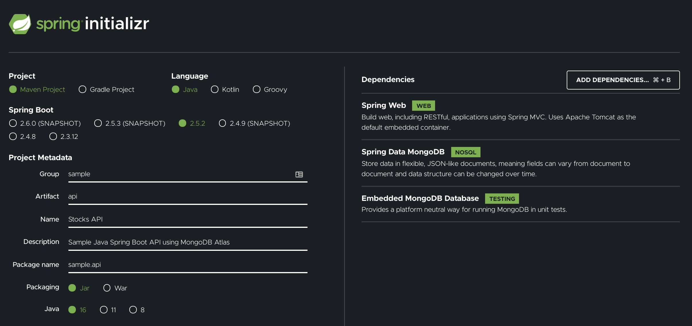

What you'll learn
- How to design an API using OpenAPI Spec (Swagger)
- How to scaffold a Java Spring API project
- How to configure application properties, web security and Swagger
- How to run and connect to MongoDB locally (stretch goal: establish remote MongoDB cluster)
What you'll need
Software
Name | Version | Required | MacOS Guide | Notes |
latest | true | The installation package typically installs both Git and Git Bash. | ||
16.0.1 | true | If you are using an older version of openjdk (minimum v11+), you can still run this project by either setting VM options in the Run Config or appending the following to the bash command below: | ||
3.5.3 | true | |||
4.2 | false | Use an embedded version of MongoDB. More info under the database related sections. |
Applications
Type | OS | Options |
Bash Emulator | MacOS | Native Terminal, iTerm2 |
Bash Emulator | Windows | |
IDE | MacOS, Windows |
Subscriptions
- Optional - Retrieve an API subscription key from: Latest Stock API
For this codelab, we will design and develop five RESTful API endpoints. The API will have a service class that calls an external stock API to populate a MongoDB, which the five endpoints will interact with. The API contract will contain the following resource methods:
Get all stock objects | GET |
Get a single stock object | GET |
Create a new stock object | POST |
Update a stock object | PUT |
Delete a stock object | DELETE |
Ideal software development occurs in two distinct phases:
- The creation of a Spec
- Development of code to match the Spec
Spec Driven Development is the process of generating a concise spec that can be used to describe your application's interactions in a pragmatic way. In other words, the Spec is a blueprint for your application, detailing how the user interacts with it, rather than just expected behaviors/results. In order to be successful with Spec Driven Development, the Spec must be:
- Standardized: Use of a standard Spec related to the type of application you are building
- Consistent: The Spec should remain consistent throughout in operations, utlizing consistent design patterns
- Tested: Agile development of the Spec, incorporating repeated user feedback with long-term focus in mind
- Concrete: The creation of a complete, foundational Spec to be used for your application
- Immutable: Coding to the Spec without deviation
- Persistent: The Spec is not changed without strong reason and careful testing
Specs Available
- RAML
- API Blueprint
- Swagger (renamed to OpenAPI Spec)
We will be utilizing OpenAPI Spect (i.e. Swagger) framework to design, produce, visualize, and consume our RESTful service. It provides a programming language-agnostic interface, which allowed both humans and computers to discover and understand the capabilities of a service without requiring access to source code.
✅Move on to the next step to start building your API Spec!
An OpenAPI spec can be written in either JSON or YAML. We will be using YAML for this code lab.
You can use the online swagger editor: editor.swagger.io
For this code lab, we are going to create a simple Stocks API that will help manage data in a MongoDB.
Open up any text editor, like Sublime or Notepad++, and create a file called openapi.yaml.
Let's begin with the basic info block at the start of the file.
Info
openapi: 3.0.3
info:
title: Stock API
description: Sample Java Spring Boot API using MongoDB Atlas
contact:
name: Zarin Lokhandwala
url: https://github.com/zarinlo
version: 2.0.0
servers:
- url: http://localhost:8080
description: Inferred Url
tags:
- name: stock-controller
description: Stock Controller
Now let's break it down:
| The version of the OpenAPI spec you are using (i.e. 3.0.3) |
| The info block contains important meta-details regarding your API |
| The version of the API being developed, which should follow Semantic Versioning. Semantic versioning consists of three digits, the first numnber indicating the major version of an application, the next number is known as minor which indicates any features that have been added, and the last number indicates the patch fix that has been applied. The major number is what is actually taken into consideration when determining the base path of an API. |
| The URL that is hosting/serving the API. More than one entry can be made under the |
| Tags are used to group or categorize operations together for a specific reason. |
Let's add the first REST endpoint definition: GET/stocks endpoint.
Before we do so, we must define the schemas for the request and response objects from the Latest Stock API (reference the Overview slide for more details) inventory.
Insert this directly after the tags section.
Stock Object
components:
schemas:
Stock:
title: Stock
type: object
properties:
dayHigh:
type: number
format: double
dayLow:
type: number
format: double
identifier:
type: string
lastPrice:
type: number
format: double
lastUpdateTime:
type: string
open:
type: number
format: double
previousClose:
type: number
format: double
symbol:
type: string
totalTradedValue:
type: number
format: double
totalTradedVolume:
type: integer
format: int64
yearHigh:
type: integer
format: int64
yearLow:
type: integer
format: int64
In the code block above, we are defining the Stock object that has a number of attributes.
Under the properties tag, each attribute is given a type and a format. You can elaborate on the types and formats, just do a quick google search.
Now let's take a step back. APIs, typically, produce and consume the Content-Type known as JSON. The /stocks endpoint should, therefore, return a JSON response object. Furthermore, in this case, an array of stock objects.
The correct way to return to return all the stock objects, according to REST, is to return an object encompassing an array of objects:
{
"stocks": [
{},
{},
{}
]
}
The incorrect way to return all the stock objects is to return a top-level array:
[
{},
{},
{}
]
An important rule in REST is to design a consistent API spec. To return either a stock object or a collection of stock objects, we define a general response object.
The response object will encompass any response data type and deliver it back to the user in a standard format.
When defining the general object, do so under the schemas section of the YAML and ensure the indentation is precise, since YAML files are senstiive.
Stock General Response
components:
schemas:
...
StockGeneralResponse:
title: StockGeneralResponse
type: object
properties:
response:
type: object
status:
type: string
enum:
- ACCEPTED
- BAD_GATEWAY
- BAD_REQUEST
- CREATED
- NOT_FOUND
- NO_CONTENT
- OK
userMessages:
uniqueItems: true
type: array
items:
type: string
This response object has three main attributes:
| This is the actual response encompassed by the general object. Ergo a stock object or a collection of stock objects. |
| The HTTP status that was returned by the underlying service responsible for the data. An |
| This is used to deliver a string of messages back to the user to provide additional information incase an error occurs. |
✅Move on to the next step to add the API endpoints.
Now we are ready to implement the GET /stocks method. We are going to insert this portion between the basic info block we created and the components block.
GET /stocks
paths:
"/api/v1/stocks":
get:
tags:
- stock-controller
summary: Get all stocks
operationId: getAllStocks
responses:
'200':
description: 'Successful: Stock(s) found.'
content:
application/json:
schema:
"$ref": "#/components/schemas/StockGeneralResponse"
'400':
description: 'Bad Request: Check input parameter(s) syntax for invalid characters.'
'401':
description: 'Unauthorized: User is not entitled to retrieve information.'
'404':
description: 'Not Found: Stock(s) not found.'
'500':
description: 'Internal Server Error: Backend service is down.'
Once again, here's the breakdown of the keys:
| This is where you specify the base + context path, essentially the full endpoint. The base path is |
| The CRUD operation being applied to a given path. |
| Short description of the function. |
| The actual name of the function you are going to use in your source code, in this case, |
| A list of possible HTTP status codes returned by the server as a response to the client. Take a look at HTTP status codes to understand which HTTP numeric response is appropriate for a given scenario. |
| Content type to be returned to the user is in the form of JSON, denoted as |
| Sets the data-type of the content being returned by the function. A method will not always return content. For instance, |
Now, under the endpoint of /api/v1/stocks, we are implementing a GET operation and a POST operation.
Here is how we are going to define a post operation, which should be aligned under the get defintion we completed above.
POST /stocks
paths:
"/api/v1/stocks":
...
post:
tags:
- stock-controller
summary: Create a new stock
operationId: createStock
requestBody:
content:
application/json:
schema:
"$ref": "#/components/schemas/Stock"
responses:
'200':
description: 'Successful: Stock(s) found.'
content:
application/json:
schema:
"$ref": "#/components/schemas/StockGeneralResponse"
'400':
description: 'Bad Request: Check input parameter(s) syntax for invalid characters.'
'401':
description: 'Unauthorized: User is not entitled to retrieve information.'
'404':
description: 'Not Found: Stock(s) not found.'
'500':
description: 'Internal Server Error: Backend service is down.'
When creating an object via a POST operation, the client passes the server some data.
Some forms of how a client can pass data to the server are:
a query parameter | Any value assigned to a key after the |
a path parameter |
|
an object sent via the body of a request |
|
a Header value |
|
a browser cookie 🍪 | Logins, shopping carts, game scores, or anything else the server should remember |
In this case, the POST will be performed with a stock object via the body of the request.
Therefore, the requestBody is the main difference between the attributes used to describe the POST operation as compared to the GET.
👉🏽 To learn more about parameter types, check out the Describing Parameters page.
This concludes the spec for the CRUD operations that can be performed under the /api/v1/stocks endpoint.
✅Move on to the next step to complete your API spec.
Let's implement the remaining three endpoints that follow the path of: /api/v1/stocks/{symbol}
GET | PUT | DELETE /stocks/{symbol}
paths:
...
"/api/v1/stocks/{symbol}":
get:
tags:
- stock-controller
summary: Get a stock by symbol
operationId: getStockBySymbol
parameters:
- name: symbol
in: path
description: A stock symbol
required: true
style: simple
allowReserved: false
schema:
type: string
responses:
'200':
description: 'Successful: Stock(s) found.'
content:
application/json:
schema:
"$ref": "#/components/schemas/StockGeneralResponse"
'400':
description: 'Bad Request: Check input parameter(s) syntax for invalid characters.'
'401':
description: 'Unauthorized: User is not entitled to retrieve information.'
'404':
description: 'Not Found: Stock(s) not found.'
'500':
description: 'Internal Server Error: Backend service is down.'
put:
tags:
- stock-controller
summary: Update an existing stock by symbol
operationId: updateStockBySymbol
parameters:
- name: symbol
in: path
description: A stock symbol
required: true
style: simple
schema:
type: string
- name: lastPrice
in: query
description: Last Price
required: true
style: form
schema:
type: number
format: double
responses:
'200':
description: 'Successful: Stock(s) found.'
content:
application/json:
schema:
"$ref": "#/components/schemas/StockGeneralResponse"
'400':
description: 'Bad Request: Check input parameter(s) syntax for invalid characters.'
'401':
description: 'Unauthorized: User is not entitled to retrieve information.'
'404':
description: 'Not Found: Stock(s) not found.'
'500':
description: 'Internal Server Error: Backend service is down.'
delete:
tags:
- stock-controller
summary: Delete a stock by symbol
operationId: deleteStockBySymbol
parameters:
- name: symbol
in: path
description: A stock symbol
required: true
style: simple
schema:
type: string
responses:
'200':
description: 'Successful: Stock(s) found.'
content:
application/json:
schema:
"$ref": "#/components/schemas/StockGeneralResponse"
'400':
description: 'Bad Request: Check input parameter(s) syntax for invalid characters.'
'401':
description: 'Unauthorized: User is not entitled to retrieve information.'
'404':
description: 'Not Found: Stock(s) not found.'
'500':
description: 'Internal Server Error: Backend service is down.'
Take a look at how the paths are defined for /api/v1/stocks and /api/v1/stocks/{symbol}. You will notice that they are surrounded by quotes. In YAML, enclosing characters in quotes ensures that it will be handled as a string.
Each of the operations above will require a path parameter denoted as:
in: path
For the rest of the items, refer to the link presented earlier: Describing Parameters
🚀 You've completed your first basic API spec! Now let's start by scaffolding (i.e. structuring) your Spring Boot project.
A tool that scaffolds your web project for you is a tool that helps you kickstart new projects, which presecribes best practices and folder structure to help you stay productive. We will use Spring Initialzr to scaffold your basic Spring boot API.
Using Spring Initialzr
Spring Initialzr can be accessed via a web UI or through your IDE (i.e. IntelliJ/Eclipse). It generates a minimal project with the dependencies of your choice and enables you to start developing quickly.
- Navigate to the web UI Spring Initialzr: https://start.spring.io
- Fill in the following: Generate a Maven Project with Java v16 and Spring Boot 2.5.2
- Fill in the project details:
Group | sample |
Artifact | api |
Name | Stocks API |
Description | Sample Java Spring Boot API using MongoDB Atlas |
Package name | sample.api |
Packaging | Jar |
- In the Dependencies sections add: Spring Web, Spring Data MongoDB, and Embedded MongoDB Database
- Click Generate Project and a download should start for the project.

Before we begin developing our API, let's setup the structure of the project correctly. Once you extract the initial zip file from the previous step, ensure your directory structure looks like the following:
|api
|-src
| |-main
| | |-java
| | | |-sample
| | | | |-api
| | |-resources
| | | |-static
| | | |-templates
| |-test
You should rename the initial api folder to something else, for instance, sample-springboot-api.
|sample-springboot-api
|-src
| |-main
| | |-java
| | | |-sample
| | | | |-api
| | |-resources
| | | |-static
| | | |-templates
| |-test
Now, let's create the other directories that we will need going further.
|sample-springboot-api
|-src
| |-main
| | |-java
| | | |-sample
| | | | |-api
| | | | | |-stocks
| | | | | | |-repositories
| | | | | | |-models
| | | | | | |-exceptions
| | | | | | |-configs
| | | | | | |-controllers
| | | | | | |-services
| | |-resources
| | | |-static
| | | |-templates
| |-test
Base Project Structure
- Under the api folder is where you want to create another directory specifically for stocks. This is so that down the line if you want to develop another API that's not related to stocks, then you can use the same project and keep things organized.
- You can either go directly into the stocks folder or you can add a v1 folder in-between the two. So for example, the structure would be api > v1 > stocks, and this helps if you are planning on maintaining multiple versions of your API down the line.
API Project Structure
Let's breakdown the folders under stocks:
controllers | Manages all the REST calls and status codes |
services | The business logic layer that handles any manipulation of data required |
repositories | ses a Java Persistence API (JPA) that analyzes all the methods defined by an interface and automatically generates queries from the method names, in order to simplify the connection to the database from the Service layer |
configs | Sets up the configurations for the REST calls, web security, Swagger documentation, etc |
models | Manages all the REST calls and status codes |
exceptions | Develop custom error handling for the application |
Apache Maven, referred to as maven, is a build management tool that is primarily used to build Java projects.
To learn more, check out: Understanding Apache Maven - The Series
Now before we import your project into an IDE, specifically IntelliJ for this tutorial, let's configure your maven settings.
Verify that maven is installed correctly by running the following:
05:00PM ~/.m2
🦋 mvn --version
Apache Maven 3.5.3 (3383c37e1f9e9b3bc3df5050c29c8aff9f295297; 2018-02-24T14:49:05-05:00)
Maven home: /opt/apache-maven-3.5.3
Java version: 16.0.1, vendor: Homebrew
Next, you will need to inlcude a settings.xml file directly under your .m2 folder. Your .m2 folder should located under your user home directory, as shown in the snippet above.
The settings.xml file does not need anything in specific for the time being, the stock file is good enough.
This file has metadata that is used by maven to install dependencies, understand which mirrors (i.e public repositories) to download said dependencies from, set proxies to circumvent firewalls, etc.
More information on a default settings.xml file here: Apache Maven Settings
If you are using IntelliJ, import your project as a Maven project. You can run through the following to make sure your project has been imported and configured correctly.
Import Project
Import the project as a Maven project. Continue through the wizard and let all the dependencies load, which may take some time.
- Reference: Importing a Maven Project
Verify Maven Build Repository
Under Preferences OR File –> Settings, go to Build, Execution. Deployment –> Build Tools –> Maven, and make sure the remote repository URLs are being pulled from your settings.xml file.
- Reference: Maven. Repositories

Set Project SDK
Under File –> Project Structure –> Project, make sure that you set your project SDK to java1.8 or java1.10.
- Reference: Working with SDKs
Setup Run Configurations
In order to run your project, go ahead and setup a Spring Boot run configuration.
Reimport Project (if needed)
Once you have imported the project, there may be times where you need to reimport depenedencies incase you add/change/remove dependencies. Press Ctrl+Shift+A to find actions, and input "reimport", you will find the "Reimport All Maven Projects". On a Mac, use ⌘ + ⇧ + A instead.

Synchronize Project (if needed)
To synchronize your project, right-click on the project folder and hit Synchronize. You can also do this from the maven projects tool window.
- Reference: Maven Projects Tool Window
✅Continue on to the next step to start creating the Object model classes for a Stock as we defined in our API Spec.
Create a class called Stock.java under the models package (i.e. directory) with the following attributes:
doubledayHighdoubledayLowStringidentifierdoublelastPriceStringlastUpdateTimedoubleopendoublepreviousCloseStringsymboldoubletotalTradedValuelongtotalTradedVolumelongyearHighlongyearLow
You will need to Generate getters and setters for this Object class so that you can access and modify the objects as needed. Under Code –> Generate select Getter and Setter and select all the attributes to generate them for. Repeat the same steps to generate a Constructor as well.
import org.springframework.data.annotation.Id;
import org.springframework.data.mongodb.core.mapping.Document;
public class Stock {
public double dayHigh;
public double dayLow;
public String identifier;
public double lastPrice;
public String lastUpdateTime;
public double open;
public double previousClose;
public String symbol;
public double totalTradedValue;
public long totalTradedVolume;
public long yearHigh;
public long yearLow;
// generate empty constructor
public Stock() {
}
public double getDayHigh() {
return dayHigh;
}
public void setDayHigh(double dayHigh) {
this.dayHigh = dayHigh;
}
public double getDayLow() {
return dayLow;
}
public void setDayLow(double dayLow) {
this.dayLow = dayLow;
}
public String getIdentifier() {
return identifier;
}
public void setIdentifier(String identifier) {
this.identifier = identifier;
}
public double getLastPrice() {
return lastPrice;
}
public void setLastPrice(double lastPrice) {
this.lastPrice = lastPrice;
}
public String getLastUpdateTime() {
return lastUpdateTime;
}
public void setLastUpdateTime(String lastUpdateTime) {
this.lastUpdateTime = lastUpdateTime;
}
public double getOpen() {
return open;
}
public void setOpen(double open) {
this.open = open;
}
public double getPreviousClose() {
return previousClose;
}
public void setPreviousClose(double previousClose) {
this.previousClose = previousClose;
}
public String getSymbol() {
return symbol;
}
public void setSymbol(String symbol) {
this.symbol = symbol;
}
public double getTotalTradedValue() {
return totalTradedValue;
}
public void setTotalTradedValue(double totalTradedValue) {
this.totalTradedValue = totalTradedValue;
}
public double getTotalTradedVolume() {
return totalTradedVolume;
}
public void setTotalTradedVolume(long totalTradedVolume) {
this.totalTradedVolume = totalTradedVolume;
}
public long getYearHigh() {
return yearHigh;
}
public void setYearHigh(long yearHigh) {
this.yearHigh = yearHigh;
}
public long getYearLow() {
return yearLow;
}
public void setYearLow(long yearLow) {
this.yearLow = yearLow;
}
}
Next, we need a class called StocksList.java to return an array of stock objects.
import java.util.List;
public class StockList {
List<Stock> stockList;
public StockList(List<Stock> stockList) {
this.stockList = stockList;
}
public List<Stock> getStockList() {
return stockList;
}
public void setStockList(List<Stock> stockList) {
this.stockList = stockList;
}
}
Now according to our API spec, we do NOT want to return a top-level array for the GET/api/v1/stocks endpoint.
Therefore, we develop a general class called StocksGeneralResponse.java. In the code snippet below, you will see the use of T which stands for Template in this case.
The template allows the StockGeneralResponse to encompass any data type delivered by the response into an object, and pass along the HTTP status for that response as well.
import org.eclipse.collections.impl.set.mutable.UnifiedSet;
import org.springframework.http.HttpStatus;
public class StockGeneralResponse<T> {
private T response;
private HttpStatus httpStatus;
private UnifiedSet<String> userMessages = UnifiedSet.newSet();
public StockGeneralResponse() {
}
public StockGeneralResponse(T response, HttpStatus httpStatus) {
this.response = response;
this.httpStatus = httpStatus;
}
public T getResponse() {
return response;
}
public void setResponse(T response) {
this.response = response;
}
public HttpStatus getHttpStatus() {
return httpStatus;
}
public void setHttpStatus(HttpStatus httpStatus) {
this.httpStatus = httpStatus;
}
public UnifiedSet<String> getUserMessages() {
return userMessages;
}
public void setUserMessages(UnifiedSet<String> userMessages) {
this.userMessages = userMessages;
}
}
✅Now let's design our first API endpoint!
Annotations in Java is a special form of metadata that can be embedded in Java source code. Users can use annotations to configure beans inside the java source file itself.
Here is a full set of all available annotations within the Spring Framework: Spring Framework Annotations
Examples of Some Annotations Used
@Component
This annotation is used on classes to indicate a Spring component. The @Component annotation marks the Java class as a bean or say component so that the component-scanning mechanism of Spring can add into the application context.
@Controller
The @Controller annotation is used to indicate the class is a Spring controller. This annotation can be used to identify controllers for Spring MVC or Spring WebFlux.
@Service
This annotation is used on a class. The @Service marks a Java class that performs some service, such as execute business logic, perform calculations and call external APIs. This annotation is a specialized form of the @Component annotation intended to be used in the service layer.
@Repository
This annotation is used on Java classes which directly access the database. The @Repository annotation works as marker for any class that fulfills the role of repository or Data Access Object.
This annotation has a automatic translation feature. For example, when an exception occurs in the @Repository there is a handler for that exception and there is no need to add a try catch block.
@Configuration
This annotation is used on classes which define beans. @Configuration is an analog for XML configuration file – it is configuration using Java class. Java class annotated with @Configuration is a configuration by itself and will have methods to instantiate and configure the dependencies.
@Bean
This annotation is used at the method level. @Bean annotation works with @Configuration to create Spring beans. As mentioned earlier, @Configuration will have methods to instantiate and configure dependencies. Such methods will be annotated with @Bean. The method annotated with this annotation works as bean ID and it creates and returns the actual bean.
@Value
This annotation is used at the field, constructor parameter, and method parameter level. The @Value annotation indicates a default value expression for the field or parameter to initialize the property with.
@SpringBootApplication
This annotation is used on the application class while setting up a Spring Boot project. The class that is annotated with the @SpringBootApplication must be kept in the base package.
@RestController
This annotation is used at the class level. The @RestController annotation marks the class as a controller where every method returns a domain object instead of a view.
@Scheduled
This annotation is a method level annotation. The @Scheduled annotation is used on methods along with the trigger metadata. A method with @Scheduled should have void return type and should not accept any parameters.
In Spring's approach to building RESTful web services, HTTP requests are handled by a controller. These components are easily identified by the @RestController annotation.
Create a class called StockController.java under the stock package and annotate the class with @RestController. Add another annotation to the same class with @RequestMapping("/api/v1"). The request mapping creates a root API context of /api/v1 and every endpoint created in the controller will begin with that context. This can also be a way to version your API.
import org.springframework.web.bind.annotation.*;
@RestController
@RequestMapping("/api/v1")
public class StockController {
}
Create a method called getStocks and annotate it with @RequestMapping("/stocks). This creates a handler for GET requests at the URL path /stocks. This method should return an array Stock objects, which we will create in just a bit. You can also control the response format returned by the API. Set the produces parameter to application/json.
import org.springframework.web.bind.annotation.*;
@RestController
@RequestMapping("/api/v1")
public class StockController {
@RequestMapping(value = "/stocks", method = RequestMethod.GET, produces = "application/json")
public StocksResponse getStocks() {
}
}
Include @ApiOperation to verbalize what the endpoint is used for and @ResponseStatus to set the status code for the HTTP response. The @ApiOperation annotation is used for our API spec, which will be displayed via Swagger UI. We will go over Swagger later in this lab, but for now, just understand that we will be using SpringFox to setup swagger for our API. To set this up you will need to add the following two dependencies in your pom.xml file, which is found at the root of the project. The pom file contains all the dependencies that your project will need.
<dependency>
<groupId>io.springfox</groupId>
<artifactId>springfox-swagger2</artifactId>
<version>2.9.2</version>
</dependency>
<dependency>
<groupId>io.springfox</groupId>
<artifactId>springfox-swagger-ui</artifactId>
<version>2.9.2</version>
</dependency>
import io.swagger.annotations.ApiOperation;
import org.springframework.http.HttpStatus;
import org.springframework.web.bind.annotation.*;
@RestController
@RequestMapping("/api/v1")
public class StockController {
@ApiOperation(value = "Get all stocks")
@RequestMapping(value = "/stocks", method = RequestMethod.GET, produces = "application/json")
@ResponseStatus(HttpStatus.OK)
public StocksResponse getStocks() {
}
}
✅You are now ready to move onto the next step.
In order to interact with MongoDB, we will be using Spring's MongoDB data repository. Spring data repositories simplify the amount of code required to implement data access layers for various persistence stores. All that's required to get this working is to create an interface that extends the Spring MongoDB repository. So let's create a StockRepository.java interface that extends the MongoRepository under the repositories package. We want to annotate this persistence layer with @Repository, which again, is a stereotype annotation applied to data access layers that are used to get data from the database.
Out-of-the-box, this interface comes with many operations, including standard CRUD (create-read-update-delete) operations. Spring has its' own query builder mechanism and the findAll method is already provided by default, so for now, we will leave this interface empty of additional queries.
When you extend the interface, the <Stock, String> implies that the MongoDB will contain Stock objects and stored as strings.
import org.springframework.data.mongodb.repository.MongoRepository;
import org.springframework.stereotype.Repository;
@Repository
public interface StockRepository extends MongoRepository<Stock, String> {
}
Let's take a step back and go back to the Stock object model class. We want to annotate our symbol property with @Id. This tells MongoDB that we want to use the symbol as the unique identifier for our stock objects.
import org.springframework.data.annotation.Id;
import java.time.LocalDateTime;
public class Stock {
@Id
String symbol;
String name;
String description;
Double price;
LocalDateTime lastUpdated;
...
}
Now we will @Autowire the StockRepository in our StockController. Autowiring in Spring enables you to inject the object dependency implicitly. It internally uses setter or constructor injection. Then we will use the predefined method, findAll(), to retrieve all the stock objects from MongoDB. The All is a reserved keyword that refers to all objects of the managed entity class, i.e. the Stock class.
import io.swagger.annotations.ApiOperation;
import org.springframework.beans.factory.annotation.Autowired;
import org.springframework.http.HttpStatus;
import org.springframework.web.bind.annotation.*;
@RestController
@RequestMapping("/api/v1")
public class StockController {
@Autowired
private StockRepository stockRepository;
@ApiOperation(value = "Get all stocks")
@RequestMapping(value = "/stocks", method = RequestMethod.GET, produces = "application/json")
@ResponseStatus(HttpStatus.OK)
public StocksResponse getStocks() {
return new StocksResponse(stockRepository.findAll());
}
}
At this point, you can startup the API locally by running ./mvnw spring-boot:run on a MacOS or mvnw.cmd spring-boot:run on a Windows. By default, the API will be running on http://localhost:8080/api/v1/stocks. Open a browser and try the GET request just by hitting that endpoint. You should see an empty stock array object as the response.

Spring allows you to configure/enable/disable various application properties rather easily via its application.properties file. You can set custom configurations as well. This file is found under the src/main/resources folder.
Spring also allows you to handle properties per environment (i.e. dev, qa, prod). This is taken care of in the naming convention of the file. In order to select which file / profile to use at runtime, you can do so in multiple ways as well.
Properties per Environment
In order to keep the environment properties organized, we will create the following files under src/main/resources. Notice the naming convention we use in the files.
application.propertiesapplication-local.propertiesapplication-dev.propertiesapplication-qa.propertiesapplication-prod.properties
We have successfully created four files. The local properties file will be used for local testing, dev will be used for the development servers, qa for Quality Assurance, and prod for the production environment. The default application.properties file will be include what is common amongst all the environments. Now there is a hierarchy for the ways that these files are sourced at runtime. Let's say you want to use the local properties file for the time being, Spring will initilize everything in that local file first, then it will initialize everything in the default application.properties file. However, for any property that has been declared in both the local file as well as prod file, Spring will use the values for the property declared in the local file vs the prod file, since that was the environment set by the user as the runtime environment.
Setting Runtime Environment
Now there are multiple ways to set the runtime environment or in other words, the Active Profile. This goes back to configuring your run/debug configurations. If you look closely, there is an option to set your Active Profile, and in that section, you can type in local or dev, etc. For the purposes of this tutorial, let's set the profile to local.
Another way to initialize the profile on startup, would be to simply add a property in the application.properties at the top, which is the following:
spring.profiles.active=local
Normally, I would not recommend declaring the runtime environment in this manner becuase you will have to update that property in a file that you version. You rather set this in your run/debug configurations instead. However, to understand more about how Spring profiles work, reference this: Spring Boot features - Profiles
Setting up Mongo Properties
In order to set the name of the mongo database, add the following properties in the application-local.properties folder. As you can see we will use Camel Case to name the mongo database. For db naming restrictions, reference: Restrictions on DB Names
spring.data.mongodb.database=sampleSpringApi
spring.data.mongodb.host=localhost
spring.data.mongodb.port=27017
The complete list of all predefined Spring application properties can be found here: Common Application Properties
Now take a step back and annotate the Stock class with @Document to name the collection inside the Mongo database that will store the stock objects.
import org.springframework.data.annotation.Id;
import org.springframework.data.mongodb.core.mapping.Document;
import java.time.LocalDateTime;
@Document(collection = "stocks")
public class Stock {
@Id
String symbol;
String name;
String description;
Double price;
LocalDateTime lastUpdated;
...
}
✅Let's generate some sample data to work with!
In order to have some sample data to test with, let's create a simple service to help populate our MongoDB. Before we create the service class, add this dependency to your pom file.
<dependency>
<groupId>com.mashape.unirest</groupId>
<artifactId>unirest-java</artifactId>
<version>1.4.9</version>
</dependency>
Now create a StockUpdateService.java class under the services package to help populate the mongo database with some sample stock data and annotate the class with @Service.
import com.mashape.unirest.http.HttpResponse;
import com.mashape.unirest.http.JsonNode;
import com.mashape.unirest.http.Unirest;
import com.mashape.unirest.http.exceptions.UnirestException;
import org.apache.http.client.HttpClient;
import org.apache.http.client.config.CookieSpecs;
import org.apache.http.client.config.RequestConfig;
import org.apache.http.impl.client.HttpClients;
import org.json.JSONObject;
import org.slf4j.Logger;
import org.slf4j.LoggerFactory;
import org.springframework.beans.factory.annotation.Autowired;
import org.springframework.scheduling.annotation.Scheduled;
import org.springframework.stereotype.Service;
import java.time.LocalDateTime;
import java.util.Iterator;
@Service
public class StockUpdateService {
private static final Logger LOGGER = LoggerFactory.getLogger(StockUpdateService.class);
@Autowired
private StockRepository stockRepository;
private static String API_URL = "https://api.iextrading.com/1.0/stock/market/batch";
StockUpdateService() {
HttpClient httpClient = HttpClients.custom()
.setDefaultRequestConfig(RequestConfig.custom()
.setCookieSpec(CookieSpecs.STANDARD).build())
.build();
Unirest.setHttpClient(httpClient);
}
@Scheduled(fixedRate = 60000)
public void updateStockQuotes() {
LOGGER.info("Updating Stock Quotes");
try {
HttpResponse<JsonNode> stocksResponse = Unirest.get(API_URL)
.queryString("symbols", "AAPL, FB, BK, GOOGL, AMZN, SNAP, MSFT, IBM, MS")
.queryString("types", "quote")
.asJson();
LOGGER.debug(stocksResponse.getBody().toString());
JSONObject stocks = stocksResponse.getBody().getObject();
Iterator keys = stocks.keys();
while (keys.hasNext()) {
String key = keys.next().toString();
JSONObject stock = stocks.getJSONObject(key).getJSONObject("quote");
saveToDatabase(stock);
}
} catch (UnirestException e) {
e.printStackTrace();
}
LOGGER.info("Finished Updating Stock Quotes");
}
private void saveToDatabase(JSONObject stock) {
Stock stockDTO = new Stock();
stockDTO.setLastUpdated(LocalDateTime.now());
stockDTO.setName(stock.getString("companyName"));
stockDTO.setSymbol(stock.getString("symbol"));
stockDTO.setPrice(stock.getDouble("latestPrice"));
stockDTO.setDescription(stock.getString("primaryExchange"));
LOGGER.info(String.format("Updating %s", stockDTO.getSymbol()));
stockRepository.save(stockDTO);
}
}
Take a look at the updateStockQuotes method and notice the @Scheduled annotation. The method will be called at a fixed rate, i.e. every 60000 milliseconds. To enable this, you must annotate the main ApiApplication class that is located under the api folder, with @EnableScheduling.
import org.springframework.boot.SpringApplication;
import org.springframework.boot.autoconfigure.SpringBootApplication;
import org.springframework.scheduling.annotation.EnableScheduling;
@EnableScheduling
@SpringBootApplication
public class ApiApplication {
public static void main(String[] args) {
SpringApplication.run(ApiApplication.class, args);
}
}
✅You are now ready to design the next endpoint!
To retrieve a stock by its' symbol, we add another method in our StockRepository utilizing Spring's query creation.
import org.springframework.data.mongodb.repository.MongoRepository;
import org.springframework.stereotype.Repository;
import sample.api.stock.models.Stock;
@Repository
public interface StockRepository extends MongoRepository<Stock, String> {
Stock findBySymbol(String symbol);
}
Now all we need to do is add another @RequestMapping endpoint in our StocksController. According to our API Spec, in order to get a stock by symbol, we need to pass the symbol as a path variable. We represent this by using the @PathVariable annotation in our function. Furthermore, to ensure that a path variable is provided, use the @ApiParam annotation and set the value and required parameters.
import io.swagger.annotations.ApiOperation;
import io.swagger.annotations.ApiParam;
import org.springframework.beans.factory.annotation.Autowired;
import org.springframework.http.HttpStatus;
import org.springframework.web.bind.annotation.*;
@RestController
@RequestMapping("/api/v1")
public class StockController {
@Autowired
private StockRepository stockRepository;
@ApiOperation(value = "Get all stocks")
@RequestMapping(value = "/stocks", method = RequestMethod.GET, produces = "application/json")
@ResponseStatus(HttpStatus.OK)
public StocksResponse getStocks() {
return new StocksResponse(stockRepository.findAll());
}
//---------------------------------------------------------------------------------------------------------------
@ApiOperation(value = "Get a stock object by symbol")
@RequestMapping(value = "/stocks/{symbol}", method = RequestMethod.GET, produces = "application/json")
@ResponseStatus(HttpStatus.OK)
public Stock getStockBySymbol(
@ApiParam(value = "A stock symbol", required = true)
@PathVariable String symbol) {
Stock stockObj = stockRepository.findBySymbol(symbol.toUpperCase());
return stockRepository.findBySymbol(symbol.toUpperCase());
}
}
✅That was easy. Let's move on to the next step.
This method is also fairly simple. Add another @RequestMapping to create a stock at the /stocks endpoint in our controller. Since this is a create method, we need to specify a body parameter in the function defintiion. This is represented by the @RequestBody annotation.
The StockRepository has a predefined method called save() just like it has the findAll() method. This automatically saves the new stock entity and returns the object that was stored into the database, which is also what we want to return to the client. Further, don't forget to upper-case the symbol.
import io.swagger.annotations.ApiOperation;
import io.swagger.annotations.ApiParam;
import org.springframework.beans.factory.annotation.Autowired;
import org.springframework.http.HttpStatus;
import org.springframework.web.bind.annotation.*;
@RestController
@RequestMapping("/api/v1")
public class StockController {
@Autowired
private StockRepository stockRepository;
@ApiOperation(value = "Get all stocks")
@RequestMapping(value = "/stocks", method = RequestMethod.GET, produces = "application/json")
@ResponseStatus(HttpStatus.OK)
public StocksResponse getStocks() {
return new StocksResponse(stockRepository.findAll());
}
//---------------------------------------------------------------------------------------------------------------
@ApiOperation(value = "Get a stock object by symbol")
@RequestMapping(value = "/stocks/{symbol}", method = RequestMethod.GET, produces = "application/json")
@ResponseStatus(HttpStatus.OK)
public Stock getStockBySymbol(
@ApiParam(value = "A stock symbol", required = true)
@PathVariable String symbol) {
Stock stockObj = stockRepository.findBySymbol(symbol.toUpperCase());
return stockRepository.findBySymbol(symbol.toUpperCase());
}
//---------------------------------------------------------------------------------------------------------------
@ApiOperation(value = "Create a new stock")
@RequestMapping(value = "/stocks", method = RequestMethod.POST, produces = "application/json")
@ResponseStatus(HttpStatus.CREATED)
public Stock createStock(
@ApiParam(value = "New stock object", required = true)
@RequestBody Stock newStock) {
newStock.setSymbol(newStock.getSymbol().toUpperCase());
return stockRepository.save(newStock);
}
}
✅Try out the next step!
For the /stocks/{symbol} endpoint, we will be utilizing the @PathVariable as well as the @RequestBody annotation.
There is no predefined update method, however the save() method will be able to update an object by ID if the object already exists in the database. So the first thing we do is find the stock object by the symbol. Second, we update that stock object with the properties from the request body. Lastly, we save the updated stock object back to the database.
import io.swagger.annotations.ApiOperation;
import io.swagger.annotations.ApiParam;
import org.springframework.beans.factory.annotation.Autowired;
import org.springframework.http.HttpStatus;
import org.springframework.web.bind.annotation.*;
@RestController
@RequestMapping("/api/v1")
public class StockController {
@Autowired
private StockRepository stockRepository;
@ApiOperation(value = "Get all stocks")
@RequestMapping(value = "/stocks", method = RequestMethod.GET, produces = "application/json")
@ResponseStatus(HttpStatus.OK)
public StocksResponse getStocks() {
return new StocksResponse(stockRepository.findAll());
}
//---------------------------------------------------------------------------------------------------------------
@ApiOperation(value = "Get a stock object by symbol")
@RequestMapping(value = "/stocks/{symbol}", method = RequestMethod.GET, produces = "application/json")
@ResponseStatus(HttpStatus.OK)
public Stock getStockBySymbol(
@ApiParam(value = "A stock symbol", required = true)
@PathVariable String symbol) {
Stock stockObj = stockRepository.findBySymbol(symbol.toUpperCase());
return stockRepository.findBySymbol(symbol.toUpperCase());
}
//---------------------------------------------------------------------------------------------------------------
@ApiOperation(value = "Create a new stock")
@RequestMapping(value = "/stocks", method = RequestMethod.POST, produces = "application/json")
@ResponseStatus(HttpStatus.CREATED)
public Stock createStock(
@ApiParam(value = "New stock object", required = true)
@RequestBody Stock newStock) {
newStock.setSymbol(newStock.getSymbol().toUpperCase());
return stockRepository.save(newStock);
}
//---------------------------------------------------------------------------------------------------------------
@ApiOperation(value = "Update an existing stock by symbol")
@RequestMapping(value = "/stocks/{symbol}", method = RequestMethod.PUT, produces = "application/json")
@ResponseStatus(HttpStatus.ACCEPTED)
public Stock updateStockBySymbol(
@ApiParam(value = "A stock symbol", required = true)
@PathVariable String symbol,
@ApiParam(value = "Updated stock object", required = true)
@RequestBody Stock updatedStock) {
Stock foundStock = stockRepository.findBySymbol(symbol.toUpperCase());
foundStock.setName(updatedStock.getName());
foundStock.setDescription(updatedStock.getDescription());
foundStock.setPrice(updatedStock.getPrice());
foundStock.setLastUpdated(updatedStock.getLastUpdated());
return stockRepository.save(foundStock);
}
}
The above implementation works, but what happens when the user passes in a symbol that does not exist? If a stock object is not found, then the foundStock variable will be null and a NullPointerException will be thrown. To handle this, we need to check if the stock object exists or doesn't. If it was found, then perform the updates, otherwise, throw a not found exception.
Spring's default exception handler will catch the exception and create a response message based on the exception details. So let's create a class called StockNotFoundException that extends a RuntimeException under the exceptions package. We will then annotate the entire class with @ResponseStatus(HttpStatus.NOT_FOUND). THis will tell Spring to set the response code to 404 in the response. Now we can use this exception if the stock was not found.
import org.springframework.http.HttpStatus;
import org.springframework.web.bind.annotation.ResponseStatus;
@ResponseStatus(HttpStatus.NOT_FOUND)
public class StockNotFoundException extends RuntimeException {
public StockNotFoundException(String message) {
super(message);
}
}
Below is the updated version of the updateStockBySymbol() method. We can apply the same logic to the getStockBySymbol() method as well.
import io.swagger.annotations.ApiOperation;
import io.swagger.annotations.ApiParam;
import org.springframework.beans.factory.annotation.Autowired;
import org.springframework.http.HttpStatus;
import org.springframework.web.bind.annotation.*;
@RestController
@RequestMapping("/api/v1")
public class StockController {
@Autowired
private StockRepository stockRepository;
@ApiOperation(value = "Get all stocks")
@RequestMapping(value = "/stocks", method = RequestMethod.GET, produces = "application/json")
@ResponseStatus(HttpStatus.OK)
public StocksResponse getStocks() {
return new StocksResponse(stockRepository.findAll());
}
//---------------------------------------------------------------------------------------------------------------
@ApiOperation(value = "Get a stock object by symbol")
@RequestMapping(value = "/stocks/{symbol}", method = RequestMethod.GET, produces = "application/json")
@ResponseStatus(HttpStatus.OK)
public Stock getStockBySymbol(
@ApiParam(value = "A stock symbol", required = true)
@PathVariable String symbol) {
Stock stockObj = stockRepository.findBySymbol(symbol.toUpperCase());
if (stockObj != null) {
return stockRepository.findBySymbol(symbol.toUpperCase());
} else {
throw new StockNotFoundException(String.format("The Stock with Symbol: %s, was not found in the database", symbol.toUpperCase()));
}
}
//---------------------------------------------------------------------------------------------------------------
@ApiOperation(value = "Create a new stock")
@RequestMapping(value = "/stocks", method = RequestMethod.POST, produces = "application/json")
@ResponseStatus(HttpStatus.CREATED)
public Stock createStock(
@ApiParam(value = "New stock object", required = true)
@RequestBody Stock newStock) {
newStock.setSymbol(newStock.getSymbol().toUpperCase());
return stockRepository.save(newStock);
}
//---------------------------------------------------------------------------------------------------------------
@ApiOperation(value = "Update an existing stock by symbol")
@RequestMapping(value = "/stocks/{symbol}", method = RequestMethod.PUT, produces = "application/json")
@ResponseStatus(HttpStatus.ACCEPTED)
public Stock updateStockBySymbol(
@ApiParam(value = "A stock symbol", required = true)
@PathVariable String symbol,
@ApiParam(value = "Updated stock object", required = true)
@RequestBody Stock updatedStock) {
Stock foundStock = stockRepository.findBySymbol(symbol.toUpperCase());
if (foundStock != null) {
foundStock.setName(updatedStock.getName());
foundStock.setDescription(updatedStock.getDescription());
foundStock.setPrice(updatedStock.getPrice());
foundStock.setLastUpdated(updatedStock.getLastUpdated());
return stockRepository.save(foundStock);
} else {
throw new StockNotFoundException(String.format("The Stock with Symbol: %s, was not found in the database", symbol.toUpperCase()));
}
}
}
✅Move onto the final endpoint!
In order to delete a stock object by its' symbol, we need to first create another method in our StockRepository interface. Add a deleteDistinctBySymbol method and take note of the word distinct. This is another keyword that is defined in the Spring query builder.
import org.springframework.data.mongodb.repository.MongoRepository;
import org.springframework.stereotype.Repository;
import sample.api.stock.models.Stock;
@Repository
public interface StockRepository extends MongoRepository<Stock, String> {
Stock findBySymbol(String symbol);
void deleteDistinctBySymbol(String symbol);
}
Now in our controller, add a @RequestMapping to delete at the /stocks/{symbol} endpoint and pass in a @PathVariable (i.e. the stock symbol). Delete methods generally return a response code of 204, i.e. No Content and no response message. To represent this, annotate the method in the controller with @ResponseStatus(HttpStatus.NO_CONTENT).
import io.swagger.annotations.ApiOperation;
import io.swagger.annotations.ApiParam;
import org.springframework.beans.factory.annotation.Autowired;
import org.springframework.http.HttpStatus;
import org.springframework.web.bind.annotation.*;
@RestController
@RequestMapping("/api/v1")
public class StockController {
@Autowired
private StockRepository stockRepository;
@ApiOperation(value = "Get all stocks")
@RequestMapping(value = "/stocks", method = RequestMethod.GET, produces = "application/json")
@ResponseStatus(HttpStatus.OK)
public StocksResponse getStocks() {
return new StocksResponse(stockRepository.findAll());
}
//---------------------------------------------------------------------------------------------------------------
@ApiOperation(value = "Get a stock object by symbol")
@RequestMapping(value = "/stocks/{symbol}", method = RequestMethod.GET, produces = "application/json")
@ResponseStatus(HttpStatus.OK)
public Stock getStockBySymbol(
@ApiParam(value = "A stock symbol", required = true)
@PathVariable String symbol) {
Stock stockObj = stockRepository.findBySymbol(symbol.toUpperCase());
if (stockObj != null) {
return stockRepository.findBySymbol(symbol.toUpperCase());
} else {
throw new StockNotFoundException(String.format("The Stock with Symbol: %s, was not found in the database", symbol.toUpperCase()));
}
}
//---------------------------------------------------------------------------------------------------------------
@ApiOperation(value = "Create a new stock")
@RequestMapping(value = "/stocks", method = RequestMethod.POST, produces = "application/json")
@ResponseStatus(HttpStatus.CREATED)
public Stock createStock(
@ApiParam(value = "New stock object", required = true)
@RequestBody Stock newStock) {
newStock.setSymbol(newStock.getSymbol().toUpperCase());
return stockRepository.save(newStock);
}
//---------------------------------------------------------------------------------------------------------------
@ApiOperation(value = "Update an existing stock by symbol")
@RequestMapping(value = "/stocks/{symbol}", method = RequestMethod.PUT, produces = "application/json")
@ResponseStatus(HttpStatus.ACCEPTED)
public Stock updateStockBySymbol(
@ApiParam(value = "A stock symbol", required = true)
@PathVariable String symbol,
@ApiParam(value = "Updated stock object", required = true)
@RequestBody Stock updatedStock) {
Stock foundStock = stockRepository.findBySymbol(symbol.toUpperCase());
if (foundStock != null) {
foundStock.setName(updatedStock.getName());
foundStock.setDescription(updatedStock.getDescription());
foundStock.setPrice(updatedStock.getPrice());
foundStock.setLastUpdated(updatedStock.getLastUpdated());
return stockRepository.save(foundStock);
} else {
throw new StockNotFoundException(String.format("The Stock with Symbol: %s, was not found in the database", symbol.toUpperCase()));
}
}
//---------------------------------------------------------------------------------------------------------------
@ApiOperation(value = "Delete a stock by symbol")
@RequestMapping(value = "/stocks/{symbol}", method = RequestMethod.DELETE, produces = "application/json")
@ResponseStatus(HttpStatus.NO_CONTENT)
public void deleteStockBySymbol(
@ApiParam(value = "A stock symbol", required = true)
@PathVariable String symbol) {
stockRepository.deleteDistinctBySymbol(symbol.toUpperCase());
}
}
✅Let's add the user interface for Swagger now that all of our endpoints are complete!
Since we already setup the dependencies needed for Swagger UI, now all we have to do is add the Swagger Configuration class.
Let's start by creating a class called SwaggerConfig.java under the config pacakge. Since this class is used to configure swagger add @EnableSwagger2 and annotate the class with @Configuration. The version of the API is set to 1.0.0, which, again, is following the rules of Semantic Versioning. You can read more about the springfox configurable properties on their website: SpringFox Documentation
import org.springframework.context.annotation.Bean;
import org.springframework.context.annotation.Configuration;
import org.springframework.http.ResponseEntity;
import org.springframework.web.bind.annotation.RestController;
import springfox.documentation.builders.ApiInfoBuilder;
import springfox.documentation.builders.PathSelectors;
import springfox.documentation.builders.RequestHandlerSelectors;
import springfox.documentation.service.ApiInfo;
import springfox.documentation.service.Contact;
import springfox.documentation.spi.DocumentationType;
import springfox.documentation.spring.web.plugins.Docket;
import springfox.documentation.swagger2.annotations.EnableSwagger2;
@Configuration
@EnableSwagger2
public class SwaggerConfig {
@Bean
public Docket documentation() {
return new Docket(DocumentationType.SWAGGER_2)
.select()
.apis(RequestHandlerSelectors.withClassAnnotation(RestController.class))
.paths(PathSelectors.any())
.build()
.pathMapping("/")
.genericModelSubstitutes(ResponseEntity.class)
.useDefaultResponseMessages(false)
.apiInfo(metadata());
}
private ApiInfo metadata() {
return new ApiInfoBuilder()
.title("Stock API")
.description("Sample Spring boot API")
.version("1.0.0")
.contact(new Contact("Zarin", "https://github.com/zarinlo", ""))
.build();
}
}
✅Move onto adding the next configuration.
Cross-origin resource sharing, also known as CORS, is a mechanism that allows restricted resources (e.g. fonts, images) on a web page to be requested from another domain outside the domain from which the first resource was served. A web page may freely embed cross-origin images, stylesheets, scripts, iFrames, and videos.
CORS defines a way in which a browser and server can interact to determine whether or not it is safe to allow the cross-origin request.
To enable this, create a CorsConfig.java class under the config package. You can reference the Web Application Security section for further details.
import org.springframework.context.annotation.Bean;
import org.springframework.context.annotation.Configuration;
import org.springframework.security.config.annotation.web.builders.HttpSecurity;
import org.springframework.security.config.annotation.web.configuration.EnableWebSecurity;
import org.springframework.security.config.annotation.web.configuration.WebSecurityConfigurerAdapter;
import org.springframework.web.cors.CorsConfiguration;
import org.springframework.web.cors.CorsConfigurationSource;
import org.springframework.web.cors.UrlBasedCorsConfigurationSource;
import java.util.Arrays;
@Configuration
@EnableWebSecurity
public class CorsConfig extends WebSecurityConfigurerAdapter {
@Override
protected void configure(HttpSecurity http) throws Exception {
http.cors();
}
@Bean
CorsConfigurationSource corsConfigurationSource() {
CorsConfiguration configuration = new CorsConfiguration();
configuration.setAllowedOrigins(Arrays.asList("*"));
configuration.setAllowCredentials(true);
configuration.setAllowedHeaders(Arrays.asList("Access-Control-Allow-Headers","Access-Control-Allow-Origin","Access-Control-Request-Method", "Access-Control-Request-Headers","Origin","Cache-Control", "Content-Type", "Authorization"));
configuration.setAllowedMethods(Arrays.asList("DELETE", "GET", "POST", "PATCH", "PUT"));
UrlBasedCorsConfigurationSource source = new UrlBasedCorsConfigurationSource();
source.registerCorsConfiguration("/**", configuration);
return source;
}
}
✅Finalize your application properties.
We covered how to add Spring properties to the application-local.properties, so now we'll go over different Spring actuators that you can add to the application.properties file. Notice that we are not adding these actuators to the local properties file, because we want to enable certain features for the entire application.
Actuator endpoints let you monitor and interact with your application. Spring boot includes a number of built-in endpoints and lets you add your own as well.
To enable spring actuator support, include the following in your pom.xml file.
<dependency>
<groupId>org.springframework.boot</groupId>
<artifactId>spring-boot-starter-actuator</artifactId>
</dependency>
Actuator Endpoints
Let's add a couple of endpoints to the application.properties file to demonstrate the use of actuators. By default, actuators can be discovered via the /actuator endpoint. If you want to override this so that you can access the endpoints via the root path, \, we will include the first line as shown. You can add multiple web endpoints, just check the spring actuator documentation linked.
management.endpoints.web.base-path=/
management.endpoints.web.exposure.include=health, metrics, httptrace, mappings
Application Properties
The LocalDateTime property in the Swagger UI will show up as an object instead of an ISO8601 string. In order to fix this, we have to add the following Jackson ObjectMapper environment property. Keep in mind, you will add this to your application.properties file vs your application-local.properties file because we want this to be enabled for every environment, and not just specifically for your local testing.
spring.jackson.serialization.write-dates-as-timestamps=false
✅Next, add in your final build steps.
In your pom.xml file we need to add the repackage goal for the spring-boot-maven-plugin. This will package the jar to be an executable so that we can run it as a standalone process. Lastly, add in the maven-compiler-plugin so that we can set the source compiler and target for our application. You can set the compiler and target in your IDE as well, but this is another way to do just that.
<build>
<plugins>
<plugin>
<groupId>org.springframework.boot</groupId>
<artifactId>spring-boot-maven-plugin</artifactId>
<version>2.0.3.RELEASE</version>
<executions>
<execution>
<goals>
<goal>repackage</goal>
</goals>
</execution>
</executions>
</plugin>
<plugin>
<groupId>org.apache.maven.plugins</groupId>
<artifactId>maven-compiler-plugin</artifactId>
<configuration>
<source>1.10</source>
<target>1.10</target>
</configuration>
</plugin>
</plugins>
</build>
Fill in the properties tag if it was not set already by Spring Initialzr.
<properties>
<project.build.sourceEncoding>UTF-8</project.build.sourceEncoding>
<project.reporting.outputEncoding>UTF-8</project.reporting.outputEncoding>
<java.version>1.10</java.version>
</properties>
✅Thats it! You are now ready to run your API locally!
Run the following commands in your root directory.
MacOS Users
./mvnw clean install
./mvnw spring-boot:run
Windows Users
mvnw.cmd clean install
mvnw.cmd spring-boot:run
Navigate to http://localhost:8080/swagger-ui.html. You should see the Swagger UI. From here, you can expand each endpoint and test out all of your API operations with the "Try it out" button.

SpringFox auto-generates Swagger in JSON format, which can be found at http://localhost:8080/v2/api-docs. The v2 stands for the version of Swagger, not the version of the API. You can see the stock data stored in mongo at http://localhost:8080/api/v1/stocks. Under the resources/static directory, you will find the swagger.yaml API Spec as well as JSON the formatted file.
You can also view the actuator endpoints enabled here:
- Health: http://localhost:8080/health
- Metrics: http://localhost:8080/metrics
- Http Trace: http://localhost:8080/httptrace
- Mappings: http://localhost:8080/mappings